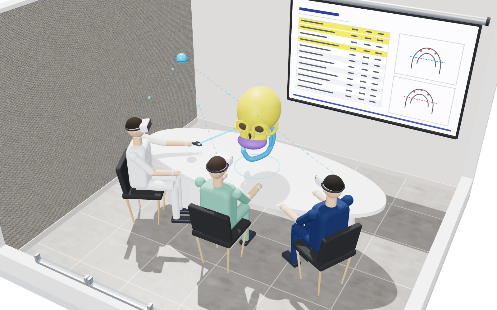

OMFS VR — 멀티유저 수술상담
접속 순서로 역할이 정해지는 3인 VR 상담 세션을 Unity와 Photon PUN2·Voice로 구현하고, 환자 CT에서 만든 3D 악골 모델과 계측 패널을 세 시점이 같은 상태로 공유하도록 만들었습니다. OpenXR 기반으로 구성해 Meta Quest 3와 Galaxy XR에서 동작합니다.

사례 PDF 열기접속 순서로 역할이 정해지는 3인 VR 상담 세션을 Unity와 Photon PUN2·Voice로 구현하고, 환자 CT에서 만든 3D 악골 모델과 계측 패널을 세 시점이 같은 상태로 공유하도록 만들었습니다. OpenXR 기반으로 구성해 Meta Quest 3와 Galaxy XR에서 동작합니다.

사례 PDF 열기